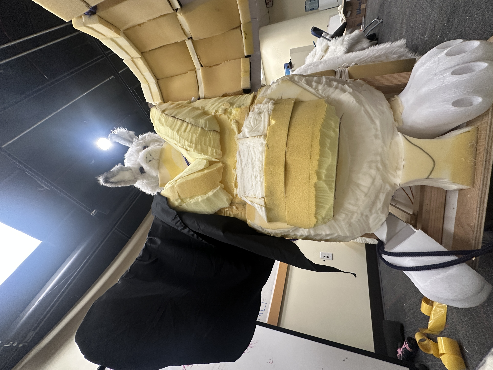

Overview
InSync invites visitors into complete darkness, where every gesture — walking, crawling, sitting, stretching — becomes a way of sensing. Pressure sensors trigger audio cues that guide the journey through shifting textures of moss, leaves, and metal.
Experience Principles
Embrace the Unknown
Darkness becomes a space for curiosity, inviting players to lean in rather than retreat.
Living Interaction
Omu is treated as a living presence rather than an obstacle, responding gently to movement, touch, and proximity.
Silent Understanding
Players communicate through movement, rhythm, and proximity, forming connections that extend beyond language.
The Path Into the Unknown
Hidden paths, sonic triggers, and shifting landscapes — the maze is navigated by hands and bodies alone, with sound as the only light.
Creature Design
01 — Sketch
Exploring Omu's silhouette through the three elemental qualities of land, sea, and sky.
02 — First Pass
Refining the creature's proportions and translating gestures of connection into its anatomy.
03 — Final
Bringing the creature, players, and environmental energy together into one visual system.


Omu is a tri-elemental creature shaped by land, sea, and sky. Its soft gradients of white, blue, and violet allow its body to dissolve gently into the surrounding environment.
Its anatomy was designed around gestures of connection rather than utility: the tail coils like two forms entwining, the wings open like an embrace, and its feline features bring a quiet, drowsy warmth to its presence.
Omu is never meant to be revealed all at once. It is gradually understood through touch, sound, movement, and proximity.
Shaping the Emotional Journey
The storyboard became a tool for designing more than sequence. Across three passes, I clarified how color, rhythm, and the gesture of touch could carry players from uncertainty in the dark toward trust, connection, and a hopeful return to light.
01 — Narrative Foundation
Mapping a journey from losing sight to discovering Omu through touch, then carrying that connection back into the world.
02 — Interaction & Atmosphere
Clarifying Omu's call, the entwining hand gesture, and the blue-violet language that distinguishes the cave encounter.
03 — Final Emotional Rhythm
Strengthening contrast and panel progression so the final encounter lands as the emotional center of the experience.


Building a Living Presence
Translating Omu from a drawing into a body meant solving for scale, softness, structure, and touch. We moved from quick material studies to a full internal frame, layered foam, articulated forms, and a fur finish that could feel gentle at human scale.


FROM MAQUETTE TO FULL SCALEFast studies helped us test expression before committing to the final internal structure and surface treatment.


Learning Through Touch
Playtesting revealed whether Omu felt like a character rather than a prop. Without sight, players naturally slowed down, listened more closely, and used both hands to read Omu's scale and expression. Their hesitation giving way to curiosity confirmed that touch could carry the emotional arc we had designed on paper.


OBSERVATIONPlayers approached cautiously, then shifted into broader and more confident gestures as Omu became familiar.
A Quiet Moment with Omu
After months of sketching, storyboarding, building, and testing, Omu no longer felt like an object assembled from foam and fur. These small moments are my personal record of the distance between the first drawing and the presence we finally brought into the room.


For me, the most meaningful part of InSync was watching something imagined on paper become a presence that people could meet, trust, and remember.